Mexico City
March 14th – 24th, 2025
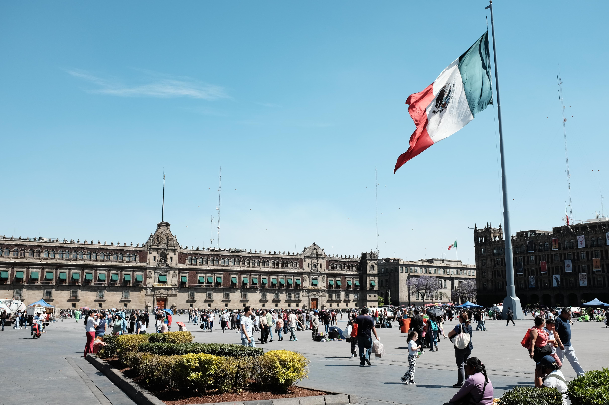
CDMX Plaza Mayor

The Guadalupe Basilica. Much of CDMX is sinking, and you can see the tower of the old church on the right learning.
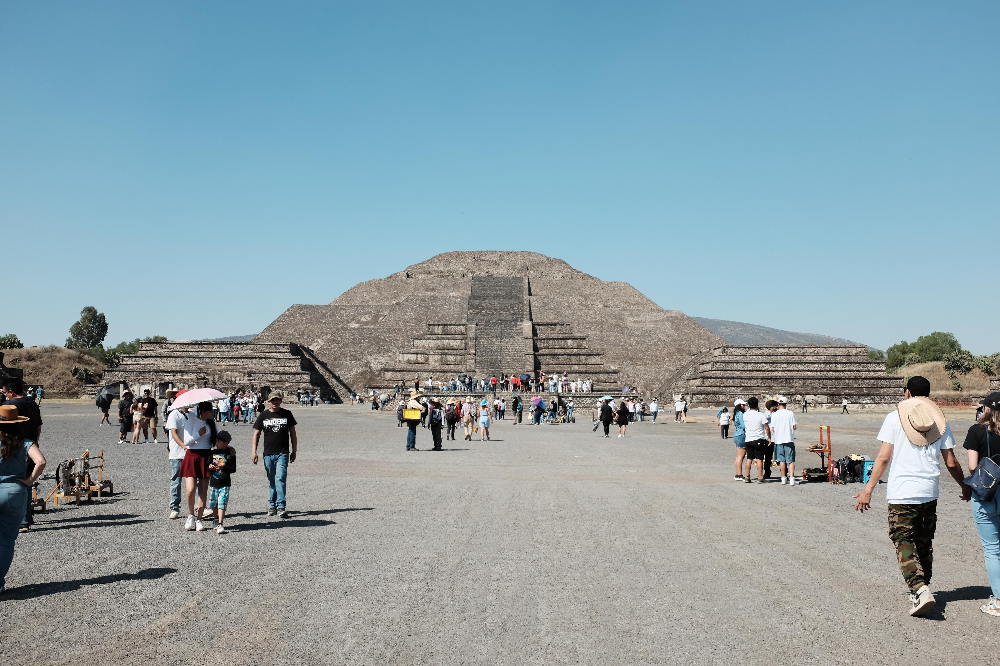
The Temple of the Sun in Teotihuacán
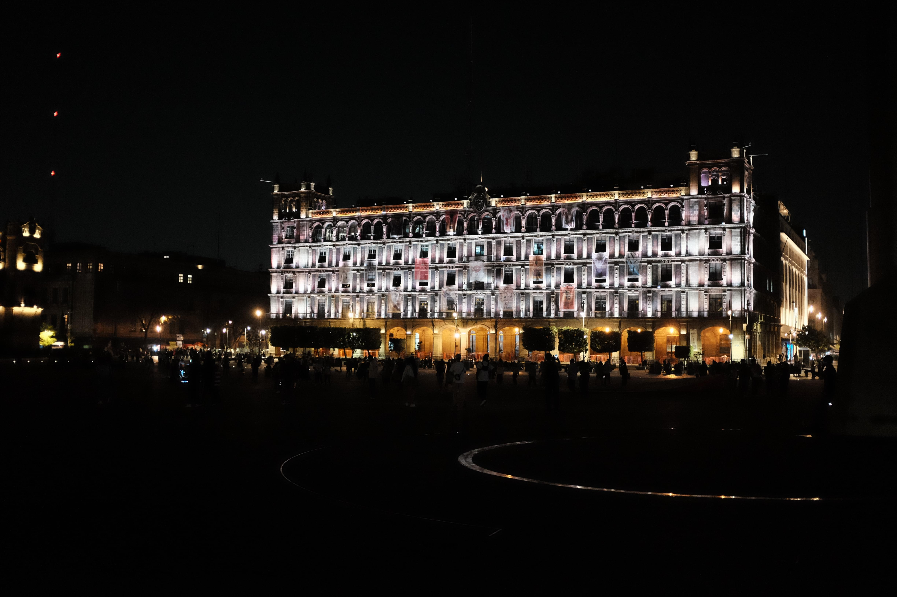
A fun night shot in Plaza Mayor
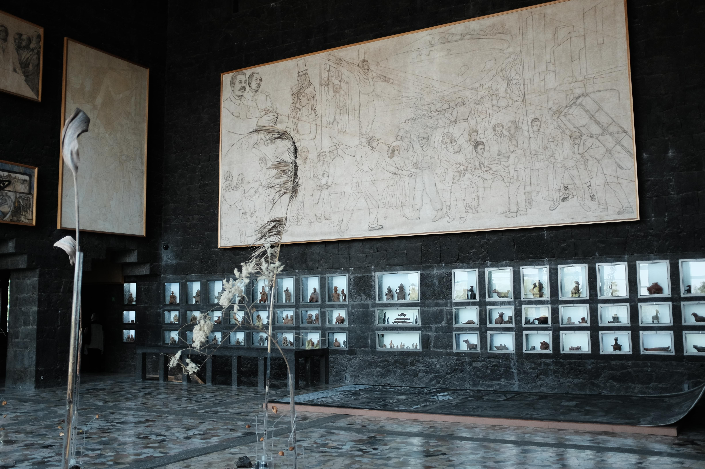
An unfinished mural by Diego Rivera, taken in a museum that was supposed to be his mausoleum.
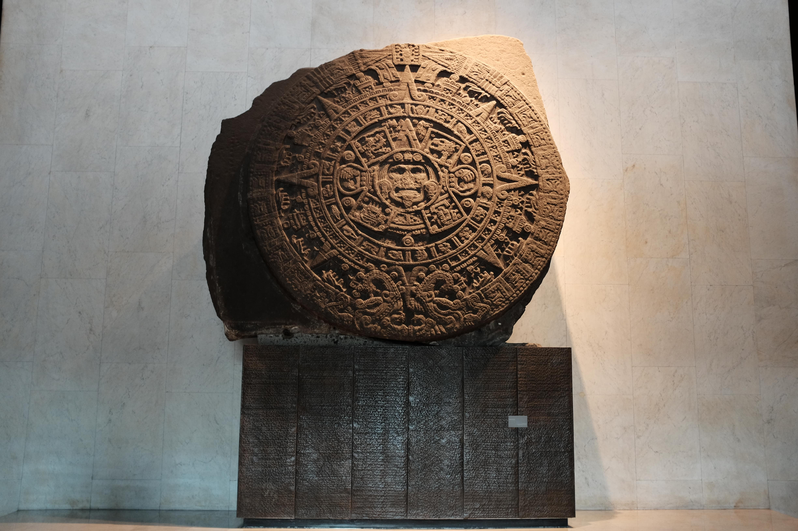
The Aztec sun stone, found in the Museum of Anthropology. It was likely a gladiatorial alter back in the day.
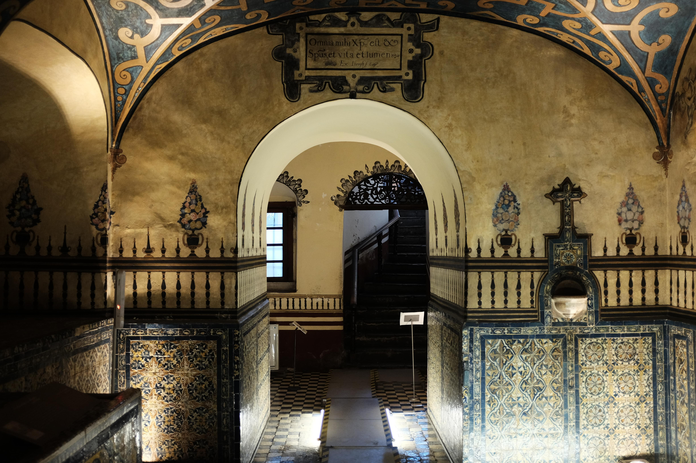
Taken in the crypt of the Museo de el Carmén. Not sure why the Spanish did this, but there's a bunch of mummified clergy members down here.
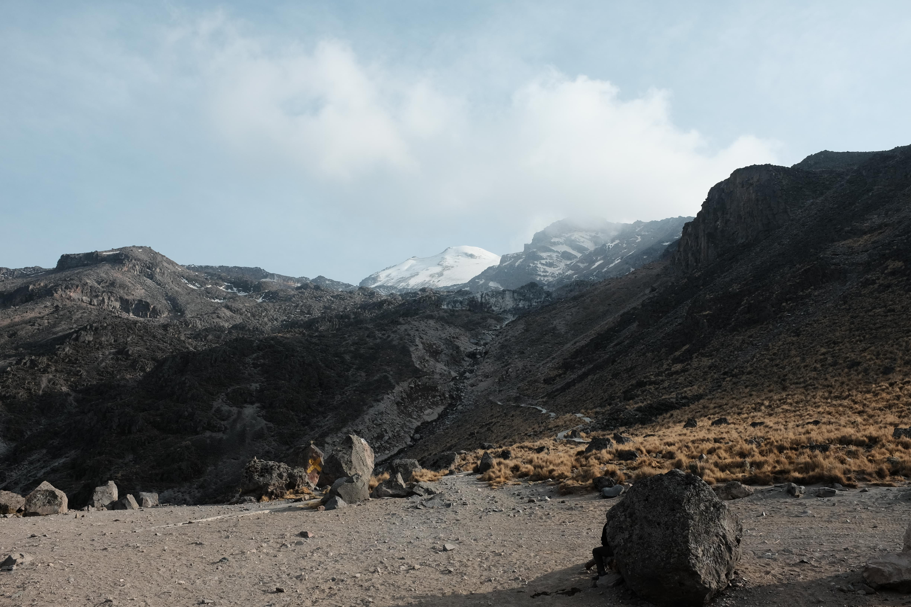
Orizaba (snow capped peak) taken from base camp. It's the third highest peak in North America at 18,491 ft.
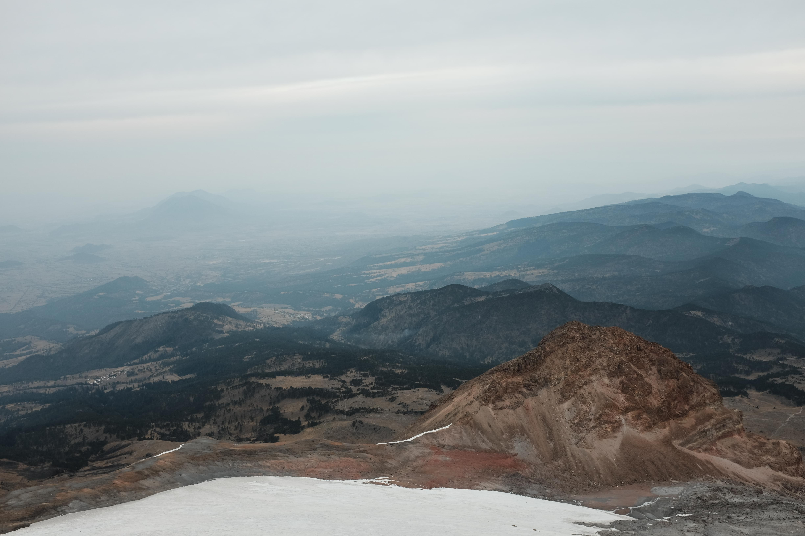
A view of the valley from Orizaba
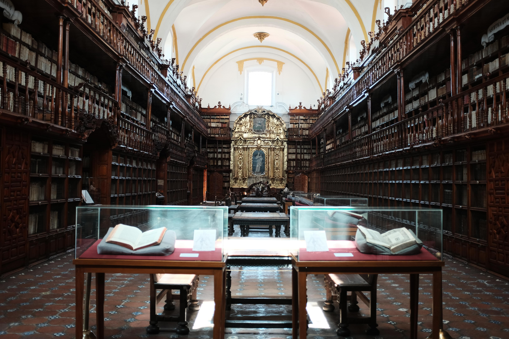
The Palafoxiana Library in the city of Puebla
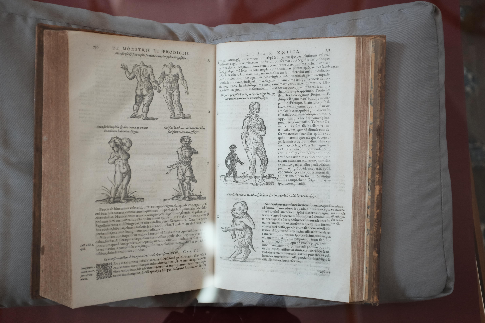
The text in this book is about birth defects, or what they called "monstrous births" in 1594. Just humanity trying to make sense of the world.
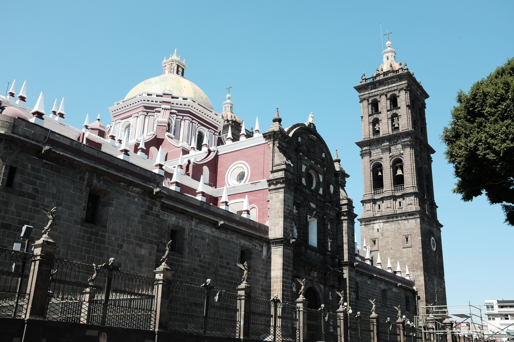
The church in Centro Puebla
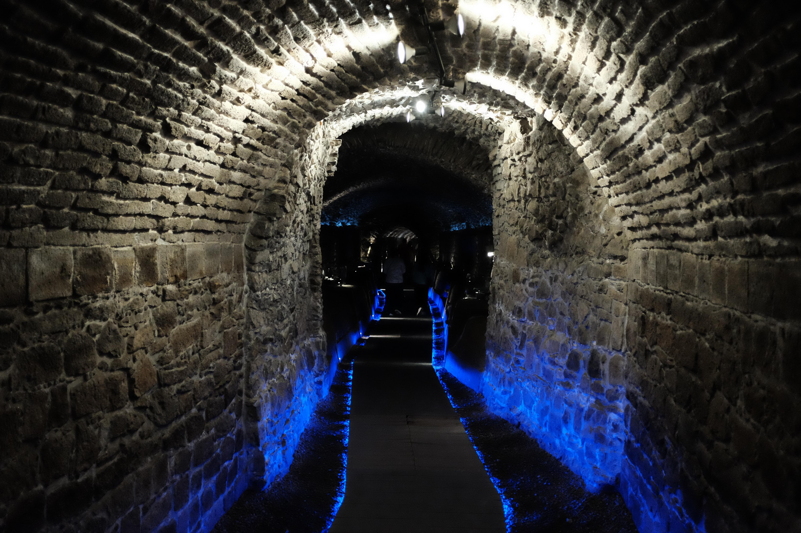
The tunnels under Puebla. Originally built for irrigation, they may have been used to move Mexican troops in the Battle of Puebla.
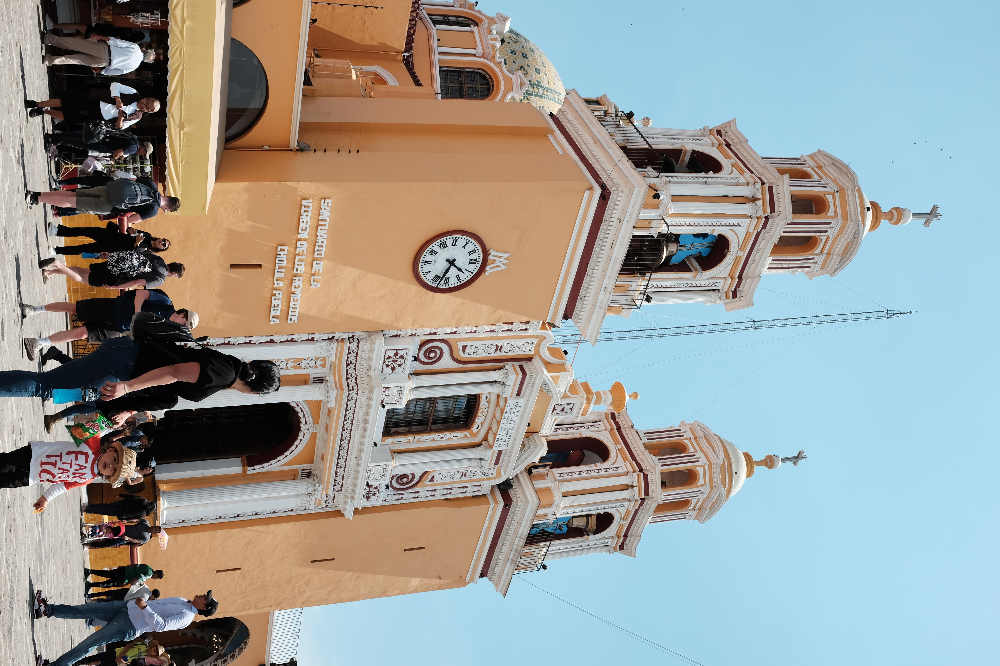
The Iglesia de Nuestra Señora in Cholula
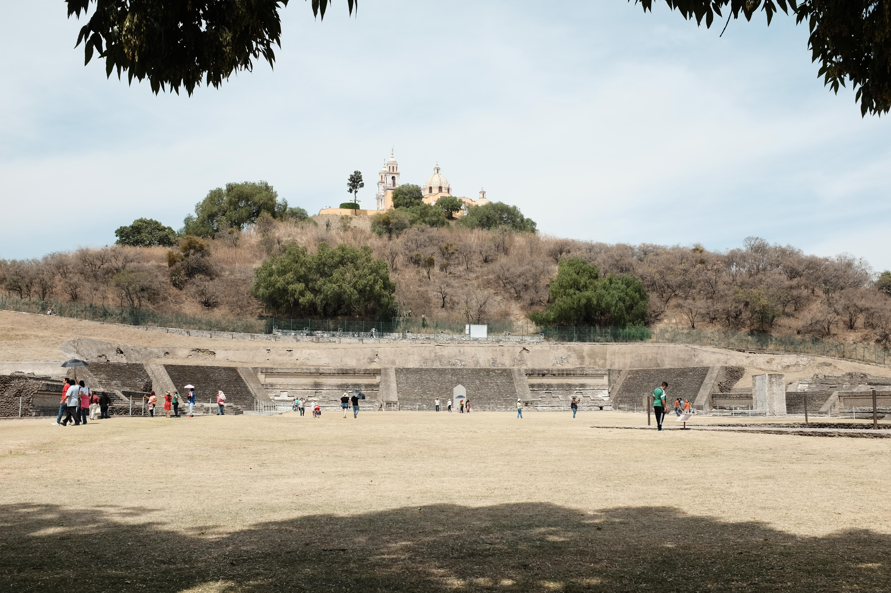
The Iglesia de Nuestra Señora atop the Temple of Cholula, built by a pre-Aztec civilization. The Spanish would knock down indigenous temples and build their churches on top of them to assert the righteousness of their god, but the temple had been abandoned for so long that they likely didn't know this "hill" was actually man-made.
1/15